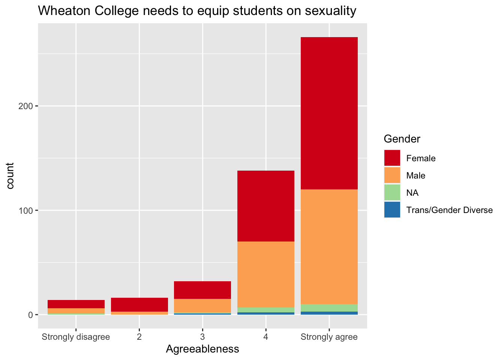
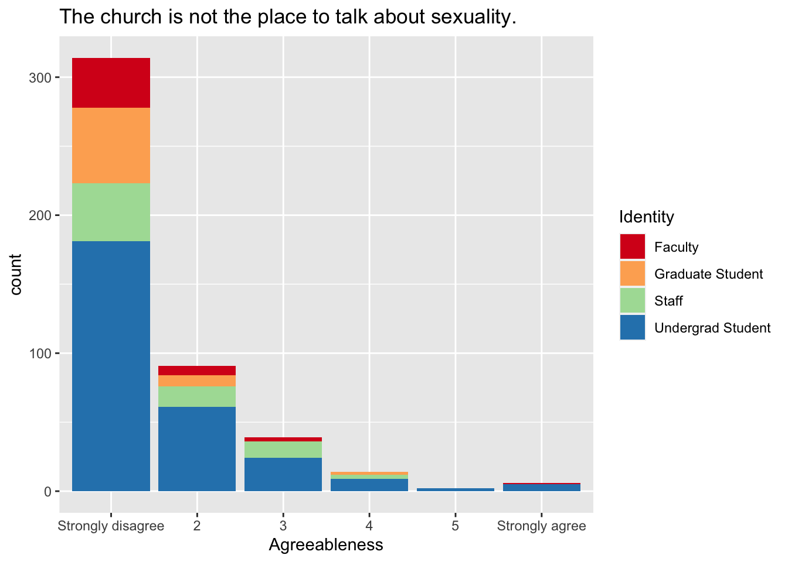
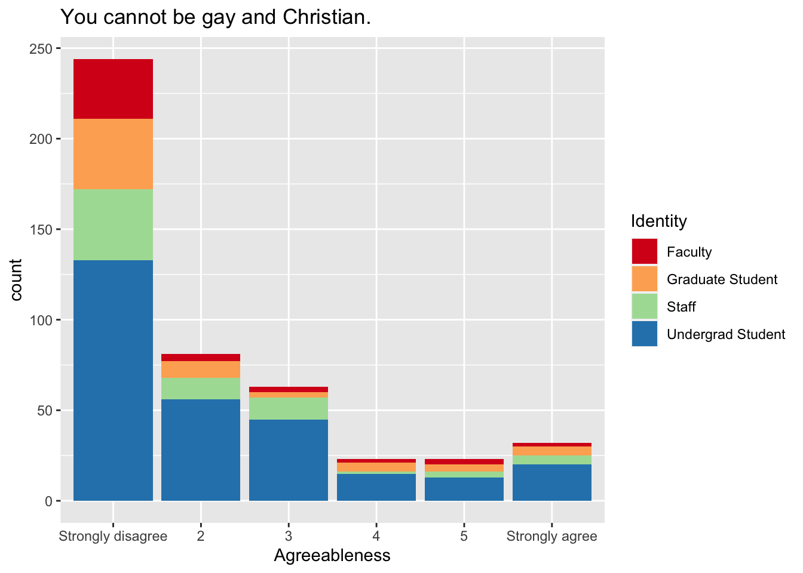
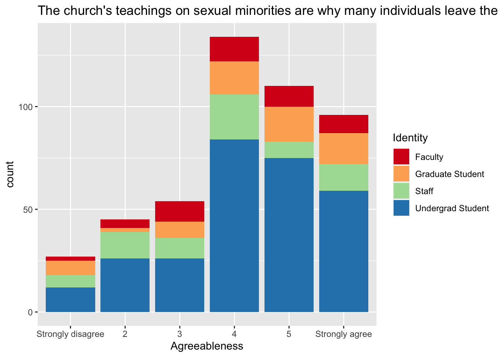

This study was launched by Seungju Kim and Record Staff to understand attitudes and beliefs of Wheaton College Community members related to Sexual Minorities. Sexual orientation has become a divisive issue in recent years, with particular relevance to the church navigating the topic in light of its theological and moral convictions related to same-sex marriage, attractions, and behaviors.
1.1 Method
Data was collected by distributing a Qualtrics web-based survey through the Record’s email listserv. Intended participants included current community members such as undergraduate students, graduate students, staff, and faculty. Respondents outside of these designations were removed from subsequent analyses.
To ensure data integrity, mischeivous or problematic responders were removed from the survey. A total of 908 responses were originally collected of which 185 were duplicates. Only surveys which were fully completed were retained, this resulted in 202 additional responses being exluded. Mischevious responders were removed when responses to text items were unrelated to question asked (e.g., responding to gender with “unicorn”). As a result, the final sample retained 525 responses.
1.2 Demographics
Code
# # Check for duplicates in the 'ResponseID' variable and get the corresponding ResponseID values# duplicates <- df[duplicated(df$IPAddress) | duplicated(df$IPAddress, fromLast = TRUE), ]# # # 'duplicates' now contains the rows with duplicate 'ResponseID' values# print(duplicates)
To investigate attitudes and beliefs, we will be reporting:
Descriptive statistics to individual items
Correlations related to scored self-constructed items
Test of differences related to scored self-constructed items
2 Descriptive Statistics
2.1 Cross Table
Code
# Create a tabletable_data <-table(sjlabelled::as_label(data$who))# Convert the table to a data framedf_table <-as.data.frame(table_data)# If you want to make it more readable, you can rename the columnsnames(df_table) <-c("Role", "Count")# Create a flextableft <-flextable(df_table)# Print the flextableft
Role
Count
1st Year Student
94
2nd Year Student
61
3rd Year Student
70
4 Year Student
53
5+ Year
6
Graduate Student
67
Staff
77
Faculty
47
Alumni
0
Other
1
Code
# Convert 'who' and 'straight' columns to factors with labels (if not already)data$who_labelled <-as_label(data$who)data$straight_labelled <-as_label(data$straight)data$gender_labelled <-as_label(data$gender)# If the above works, try using the 'by' argumentct1 <-crosstable(data, who_labelled, by =c(straight_labelled)) %>%as_flextable(keep_id =TRUE)ct1 <-add_header_lines(ct1, values ="Identity v. Sexual Identity")ct1
Identity v. Sexual Identity
.id
label
variable
Would you describe yourself as exclusively attracted to the opposite-sex, that is heterosexual/straight?
3
Straight
Sexual Minority
3
who_labelled
What best describes you currently? - Selected Choice
ggplot(data_cleaned, aes(sjlabelled::as_label(politics_1), fill = who_col)) +geom_bar() +labs(x ="Overall Political Attitude", title ="Overal Political Leanings",fill ="Identity") +# Change 'Legend Title' to your desired titlescale_fill_brewer(palette ="Spectral")
Code
ggplot(data_cleaned, aes(sjlabelled::as_label(politics_1), fill = gender)) +geom_bar() +labs(x ="Overall Political Attitude", title ="Overal Political Leanings",fill ="Gender") +# Change 'Legend Title' to your desired titlescale_fill_brewer(palette ="Spectral")
Code
ggplot(data_cleaned, aes(sjlabelled::as_label(politics_1), fill = sjlabelled::as_label(straight))) +geom_bar() +labs(x ="Overall Political Attitude", title ="Overal Political Leanings",fill ="Sexual Orientation") +# Change 'Legend Title' to your desired titlescale_fill_brewer(palette ="Set1")
ggplot(data_cleaned, aes(sjlabelled::as_label(politics_2), fill = who_col)) +geom_bar() +labs(x ="Social Issues", title ="Social Political Leanings",fill ="Identity") +# Change 'Legend Title' to your desired titlescale_fill_brewer(palette ="Spectral")
Code
ggplot(data_cleaned, aes(sjlabelled::as_label(politics_2), fill = gender)) +geom_bar() +labs(x ="Social Issues", title ="Social Political Leanings",fill ="Gender") +# Change 'Legend Title' to your desired titlescale_fill_brewer(palette ="Spectral")
Code
ggplot(data_cleaned, aes(sjlabelled::as_label(politics_2), fill = sjlabelled::as_label(straight))) +geom_bar() +labs(x ="Social Issues", title ="Social Political Leanings",fill ="Sexual Orientation") +# Change 'Legend Title' to your desired titlescale_fill_brewer(palette ="Set1")
ggplot(data_cleaned, aes(sjlabelled::as_label(politics_3), fill = who_col)) +geom_bar() +labs(x ="Economic Issues", title ="Economic Political Leanings",fill ="Identity") +# Change 'Legend Title' to your desired titlescale_fill_brewer(palette ="Spectral")
Code
ggplot(data_cleaned, aes(sjlabelled::as_label(politics_3), fill = gender)) +geom_bar() +labs(x ="Economic Issues", title ="Economic Political Leanings",fill ="Gender") +# Change 'Legend Title' to your desired titlescale_fill_brewer(palette ="Spectral")
Code
ggplot(data_cleaned, aes(sjlabelled::as_label(politics_3), fill = sjlabelled::as_label(straight))) +geom_bar() +labs(x ="Economic Issues", title ="Economic Political Leanings",fill ="Sexual Orientation") +# Change 'Legend Title' to your desired titlescale_fill_brewer(palette ="Set1")
ggplot(data_cleaned, aes(x = sjlabelled::as_label(attitudes_2), fill = who_col)) +geom_bar() +labs(x ="Agreeableness", title ="Wheaton should be more welcoming towards Sexual Minorities",fill ="Identity") +# Change 'Legend Title' to your desired titlescale_fill_brewer(palette ="Spectral")
Code
ggplot(data_cleaned, aes(x = sjlabelled::as_label(attitudes_2), fill = gender)) +geom_bar() +labs(x ="Agreeableness", title ="Wheaton should be more welcoming towards Sexual Minorities",fill ="Gender") +# Change 'Legend Title' to your desired titlescale_fill_brewer(palette ="Spectral")
Code
ggplot(data_cleaned, aes(x = sjlabelled::as_label(attitudes_2), fill = sjlabelled::as_label(straight))) +geom_bar() +labs(x ="Agreeableness", title ="Wheaton should be more welcoming towards Sexual Minorities",fill ="Sexual Orientation") +# Change 'Legend Title' to your desired titlescale_fill_brewer(palette ="Set1")
4.3 Wheaton promotes healthy converstaions around sexuality
ggplot(data_cleaned, aes(x = sjlabelled::as_label(attitudes_4), fill = who_col)) +geom_bar() +labs(x ="Agreeableness", title ="Wheaton College needs to equip students on sexuality",fill ="Identity") +# Change 'Legend Title' to your desired titlescale_fill_brewer(palette ="Spectral")
Code
ggplot(data_cleaned, aes(x = sjlabelled::as_label(attitudes_4), fill = gender)) +geom_bar() +labs(x ="Agreeableness", title ="Wheaton College needs to equip students on sexuality",fill ="Gender") +# Change 'Legend Title' to your desired titlescale_fill_brewer(palette ="Spectral")

Code
ggplot(data_cleaned, aes(x = sjlabelled::as_label(attitudes_4), fill = sjlabelled::as_label(straight))) +geom_bar() +labs(x ="Agreeableness", title ="Wheaton College needs to equip students on sexuality",fill ="Sexual Orientation") +# Change 'Legend Title' to your desired titlescale_fill_brewer(palette ="Set1")
4.5 Wheaton College needs to equip students on sexuality
ggplot(data_cleaned, aes(x = sjlabelled::as_label(attitudes_5), fill = who_col)) +geom_bar() +labs(x ="Agreeableness", title ="I am content with the Community Covenant's convictions on sexuality.",fill ="Identity") +# Change 'Legend Title' to your desired titlescale_fill_brewer(palette ="Spectral")
Code
ggplot(data_cleaned, aes(x = sjlabelled::as_label(attitudes_5), fill = gender)) +geom_bar() +labs(x ="Agreeableness", title ="I am content with the Community Covenant's convictions on sexuality.",fill ="Gender") +# Change 'Legend Title' to your desired titlescale_fill_brewer(palette ="Spectral")
Code
ggplot(data_cleaned, aes(x = sjlabelled::as_label(attitudes_5), fill = sjlabelled::as_label(straight))) +geom_bar() +labs(x ="Agreeableness", title ="I am content with the Community Covenant's convictions on sexuality.",fill ="Sexual Orientation") +# Change 'Legend Title' to your desired titlescale_fill_brewer(palette ="Set1")
ggplot(data_cleaned, aes(sjlabelled::as_label(views_1), fill = (who_col))) +geom_bar() +labs(x ="Agreeableness", title ="Attraction to the same-sex is a sin.",fill ="Identity") +# Change 'Legend Title' to your desired titlescale_fill_brewer(palette ="Spectral")
Code
ggplot(data_cleaned, aes(sjlabelled::as_label(views_1), fill = sjlabelled::as_label(straight))) +geom_bar() +labs(x ="Agreeableness", title ="Attraction to the same-sex is a sin.",fill ="Sexual Orientation") +# Change 'Legend Title' to your desired titlescale_fill_brewer(palette ="Set1")
# Now use data_cleaned in ggplotggplot(data_cleaned, aes(sjlabelled::as_label(views_2), fill = sjlabelled::as_label(who_col))) +geom_bar() +labs(x ="Agreeableness", title ="Acting upon same-sex attractions is a sin.",fill ="Identity") +scale_fill_brewer(palette ="Spectral")
Code
# Now use data_cleaned in ggplotggplot(data_cleaned, aes(sjlabelled::as_label(views_2), fill = sjlabelled::as_label(straight))) +geom_bar() +labs(x ="Agreeableness", title ="Acting upon same-sex attractions is a sin.",fill ="Identity") +scale_fill_brewer(palette ="Set1")
5.3 Bible says marriage is between a man and a woman.
# Now use data_cleaned in ggplotggplot(data_cleaned, aes(sjlabelled::as_label(views_3), fill = sjlabelled::as_label(who_col))) +geom_bar() +labs(x ="Agreeableness", title ="The Bible states that marriage is exclusively between a man and a woman.",fill ="Identity") +scale_fill_brewer(palette ="Spectral")
Code
# Now use data_cleaned in ggplotggplot(data_cleaned, aes(sjlabelled::as_label(views_3), fill = sjlabelled::as_label(straight))) +geom_bar() +labs(x ="Agreeableness", title ="The Bible states that marriage is exclusively between a man and a woman.",fill ="Sexual Orientation") +scale_fill_brewer(palette ="Set1")
# Now use data_cleaned in ggplotggplot(data_cleaned, aes(sjlabelled::as_label(views_4), fill = sjlabelled::as_label(who_col))) +geom_bar() +labs(x ="Agreeableness", title ="Same-sex attraction is a choice.",fill ="Identity") +scale_fill_brewer(palette ="Spectral")
Code
# Now use data_cleaned in ggplotggplot(data_cleaned, aes(sjlabelled::as_label(views_4), fill = sjlabelled::as_label(straight))) +geom_bar() +labs(x ="Agreeableness", title ="Same-sex attraction is a choice.",fill ="Identity") +scale_fill_brewer(palette ="Set1")
ggplot(data_cleaned, aes(sjlabelled::as_label(views_5), fill = sjlabelled::as_label(who_col))) +geom_bar() +labs(x ="Agreeableness", title ="The church is not the place to talk about sexuality.",fill ="Identity") +scale_fill_brewer(palette ="Spectral")

Code
ggplot(data_cleaned, aes(sjlabelled::as_label(views_5), fill = sjlabelled::as_label(straight))) +geom_bar() +labs(x ="Agreeableness", title ="The church is not the place to talk about sexuality.",fill ="Identity") +scale_fill_brewer(palette ="Set1")
ggplot(data_cleaned, aes(sjlabelled::as_label(views_7), fill = sjlabelled::as_label(who_col))) +geom_bar() +labs(x ="Agreeableness", title ="The church should create room for sexual minorities.",fill ="Identity") +scale_fill_brewer(palette ="Spectral")
Code
ggplot(data_cleaned, aes(sjlabelled::as_label(views_7), fill = sjlabelled::as_label(straight))) +geom_bar() +labs(x ="Agreeableness", title ="The church should create room for sexual minorities.",fill ="Sexual Orientation") +scale_fill_brewer(palette ="Set1")
ggplot(data_cleaned, aes(sjlabelled::as_label(views_8), fill = sjlabelled::as_label(who_col))) +geom_bar() +labs(x ="Agreeableness", title ="You cannot be gay and Christian.",fill ="Identity") +scale_fill_brewer(palette ="Spectral")

Code
ggplot(data_cleaned, aes(sjlabelled::as_label(views_8), fill = sjlabelled::as_label(straight))) +geom_bar() +labs(x ="Agreeableness", title ="You cannot be gay and Christian.",fill ="Sexual Orientation") +scale_fill_brewer(palette ="Set1")
ggplot(data_cleaned, aes(sjlabelled::as_label(views_9), fill = sjlabelled::as_label(who_col))) +geom_bar() +labs(x ="Agreeableness", title ="If you pray hard enough, same-sex attraction can be healed.",fill ="Identity") +scale_fill_brewer(palette ="Spectral")
Code
ggplot(data_cleaned, aes(sjlabelled::as_label(views_9), fill = sjlabelled::as_label(straight))) +geom_bar() +labs(x ="Agreeableness", title ="If you pray hard enough, same-sex attraction can be healed.",fill ="Identity") +scale_fill_brewer(palette ="Set1")
ggplot(data_cleaned, aes(sjlabelled::as_label(views_11), fill = sjlabelled::as_label(who_col))) +geom_bar() +labs(x ="Agreeableness", title ="The church's teachings on sexual minorities are why many individuals leave the church.",fill ="Identity") +scale_fill_brewer(palette ="Spectral")

Code
ggplot(data_cleaned, aes(sjlabelled::as_label(views_11), fill = sjlabelled::as_label(straight))) +geom_bar() +labs(x ="Agreeableness", title ="The church's teachings on sexual minorities are why many individuals leave the church.",fill ="Identity") +scale_fill_brewer(palette ="Set1")
5.12 Church’s treatment of Sexual Minorities are why people leave church
ggplot(data_cleaned, aes(sjlabelled::as_label(views_12), fill = sjlabelled::as_label(who_col))) +geom_bar() +labs(x ="Agreeableness", title ="The church's treatment of sexual minorities are why many individuals leave the church.",fill ="Identity") +scale_fill_brewer(palette ="Spectral")
Code
ggplot(data_cleaned, aes(sjlabelled::as_label(views_12), fill = sjlabelled::as_label(straight))) +geom_bar() +labs(x ="Agreeableness", title ="The church's treatment of sexual minorities are why many individuals leave the church.",fill ="Identity") +scale_fill_brewer(palette ="Set1")
5.13 Bible doesn’t speak to contemporary same-sex relations/marriages
quadgram n
1 <NA> 6
2 pray hard enough 5
3 sexual gender minorities 4
4 think wheaton college 4
5 welcoming sexual minorities 4
6 sex outside marriage 3
Code
head(trigram_counts, n =30)
quadgram n
1 <NA> 6
2 pray hard enough 5
3 sexual gender minorities 4
4 think wheaton college 4
5 welcoming sexual minorities 4
6 sex outside marriage 3
7 sexual minorities wheaton 3
8 attraction can healed 2
9 believe people can 2
10 biblical definition marriage 2
11 healed samesex attraction 2
12 just samesex attraction 2
13 many sexual minorities 2
14 marriage man woman 2
15 people wheaton believe 2
16 sexual minorities campus 2
17 speak truth love 2
18 students faculty staff 2
19 abhorring homosexuality something 1
20 able get know 1
21 able help us 1
22 able interpret scripture 1
23 able see others 1
24 able simply change 1
25 able speak truth 1
26 able take stand 1
27 absolutely love support 1
28 absolutely room nuance 1
29 absurdly large number 1
30 abundantly clear sin 1
Code
text_data
[1] "seems like biased survey"
[2] " none"
[3] " fact survey sent demonstrates liberal leftist views college bible clear topic room disagreement"
[4] "even something happened years ago stories still shared can extremely hurtful caution mindful words effect especially positions power"
[5] "jesus’ condemnation homesexual relations based historical practice adult men sexual relations young boys continues universally condemned church society tends happen catholic churches jesus calls followers show love acceptance toward people wheaton college deliberates goes wheaton acted numerous ways teachings christ caused harm god’s people embarrassed part community happening feel stuck difficult transition different school"
[6] " last question felt little targeted also confused put percentage general estimation put estimation wheaton college community sexual minority"
[7] "’s important talk sexuality christianity gay people go hell college shouldn’t want student faculty go hell think school shouldn’t reinforce sinful ideology openly welcoming people sexual minorities genders one healthy sexual preference male female reinforcement different beliefs wheaton disgrace christianity god receive proper disgust student body staff alumni"
[8] "im staff member little involvement able get know students feel like answers may skewed comparatively sexual minority student"
[9] " questions vague survey trying indicate christians church love everyone process teach truth part process teaching engaging homosexual activity action thought sinful"
[10] " think wheaton college shames lbgtq lifestyles people needs become inclusive welcoming"
[11] " survey type unscientific reported unscientific results presented great care unscientific survey strong potential likelihood misrepresenting overall views members college causing unnecessary controversy public criticism"
[12] "many questions answered neutral choice indefinite wording prompted example question possibility gay christian depends one means believe people can feelings sex working submitting lifestyle christ avoiding acting feelings sense answer yes means someone can identify gay person seeks samesex marriage reject bible’s stance matter question whether take seriously word god truly desire live way asks us can sign insincere faith basically ’m side b"
[13] "wheaton college needs show compassion toward struggle sin without condoning "
[14] "appreciate survey equated church wheaton college one hope institution higher learning different attitudes toward member community fully voluntary association like local church someone wanting earn degree close christian community share older generations approaches sexuality httpswwwpewresearchorgreligionreligiouslandscapestudyreligioustraditionevangelicalprotestantviewsabouthomosexuality increasingly left nowhere said issue polarized fundagelicals national level im sure perceptions can changed moreover polarizing unlikely stop anytime soon since lucrative college presidents megachurch pastors press issue watershed battle flash point evangelical history"
[15] "thanks survey "
[16] " survey wasnt well constructed represent difference individuals stances sexual orientation matter religiousecclesial practice political issue example sex marriage law debate states whether clergy bless sex unions issue churches"
[17] "’s part wants say “ someone able interpret scripture way ’s fine” ’s another much cynical part asks earth can bible interpreted way seems cut dry course opinion end "
[18] " charitable biblical teaching takes priority speak truth love"
[19] " distinct line drawn person struggles attraction person acts attraction"
[20] "wheaton rigid many things minorities just sexual preferences also treat women women lacking middle management even director level christ welcomed christlike tell somebody wrong instead welcome lead example sometimes sexuality brought trauma sometimes people born way even wheaton feel correct catholic priests forcing true make happen alienates"
[21] " think homosexuality sin many people think however people also come hate homosexuals sin right since sin think going today many people see sin sinner believe behind sin human equally beautifully created image god"
[22] "im proud wheaton stays firm convictions biblical values issue also looking build bridges engage conversation others challenging issue church hasnt handled well caused lot wounding easy answers solutions"
[23] " last question seems poorly designed offering range categories might give useful feedback rather forcing respondents specify number"
[24] " name someone sexual minority view means come personally publicly way directly witnessed assume lot wheaton community sexual minorities totally fine expect anyone close personal friends inform sexual identity seems impertinence try guess someones sexual identity"
[25] "good survey"
[26] " sexual minorities know part wheaton community"
[27] "hate sin love sinner particular sin seems talked sin christianity today sexual minorities experience often feel unsupported christians don’t support beliefs don’t feel loved don’t reinforce feelings decisions marriage community don’t think sin feelings acted upon sin christians church can place welcoming place discuss never support acting upon instead hopes repentance however believe can better job acknowledging repentance needed life homosexuality sin"
[28] "wheaton college never compromise beliefs worldly approval"
[29] " don’t see grey area bible marriage man woman bible condemns homosexuality several times feeling attraction homosexuality sin neither temptations acting feelings sin believe wheaton college able take stand even makes people upset uncomfortable christian offensive people mean welcome sexual minorities love absolutely love support homosexuality practicing homosexual convicted call christian however world thinks ’s easy say homosexuals sexual sin watching porn masturbating also sexual sin reason ’s easier condemn homosexuals less harsh people struggling sexual addiction"
[30] "interesting survey though think accomplished without locking users sterile responses students behind survey exactly goal collection facts attempting prove disprove"
[31] " wording pray hard enough samesex attraction can healed innately biased praying hard enough nothing gods power heal essentially framing belief healing samesex attraction antithetical gospel grace strongly believe people can will healed samesex attraction continued offering ones life living sacrifice god meaning giving rights oneself desires oneself worship god always immediate rarely means think belief hold sin just controversial ones like samesex attraction quote please dont splice make say something opposite saidi know easy dishonest"
[32] " think clearer wheaton fact bible alone somewhat ambiguous samesex matters position uphold agree informed churchs tradition reading scriptures also think separate opposition samesex marriages theological position opposition political stance"
[33] " community covenants language regarding sexuality sexual minorities actively discriminatory harmful wheaton policies communications reflect majority views evangelical scholars regarding sexuality"
[34] " unsure survey welcoming sexual minorities meant agreeing welcoming people wheaton believe strongly wheaton welcoming sexual minorities people feel means agreeing acting upon sex attraction lifestyle"
[35] "talk chaplain sexuality julia margason"
[36] " think attitude towards trying fix someones sexuality harmful unbiblical responsibility individual control impulses change sexuality "
[37] " people feel temptation sex opposite gender outside marriage historically seen natural samesex attraction however argue equally wrong sex two people married man woman sin whether heterosexual sex less samesex attraction everyone feels illicit attraction whether heterosexual equally sinful everyone feels god intended sex "
[38] "thank survey means lot "
[39] " older grad student dont personally know people wheaton believe important issue generation learn address disciple people compassion dignity jesuscentered truth grace"
[40] "wheaton needs embrace thought leadership andrew comisky desert stream ministries httpswwwandrewcomiskeycom way counter liberal sexual agenda"
[41] " survey administered will cause division among students staff faculty administering survey like implies perhaps biblical definition marriage questionable survey really come back harm college released media"
[42] " appreciate forced answer number sexual minorities wheaton answered dont know offered dont know complete survey without giving number view flawed question tabulated"
[43] "sharing christs love also sharing truth love person accepting sin sin singled grievous another sinners"
[44] "thanks survey figure care well students part church may found faithful"
[45] "thank record office "
[46] "president ryken college need take stronger public stance condemning homosexuality transgenderism sex outside marriage college must exhort students conform world issue rather biblically discerning circumstances college give support lgbtq community however college needs train students minister lgbt community evangelism counseling help repent find christ change lifestyle big need trained counselors area especially comes gender dysphoria clinical condition time college also needs condemn heterosexual sex outside marriage also sin also wrong student body need love hearts struggle sexuality condemning helping overcome sinful temptations struggles"
[47] "acting sex impulses sin complicated sin like something certain people deal others still sin needs turned away "
[48] "fear based attitudes focus rule following behavior shuts important opportunities students others college community seek mentoring others walk alongside difficult spaces around sexuality ’s safe wrestle mess struggles hidden rather creating safety inviting loving christfilled voices lives"
[49] " complex topic going hold entirety scripture must hold biblical definition marriage holy sexuality sex attraction one many temptations confessed placed blood jesus able help us obey commands"
[50] " questions survey misleading wish room survey explain positions rather clicking answers can easily misunderstood \n survey request ms julia morrow lovingly encourage publish lead student body astray furthermore encourage repent embrace biblical gospel rather fantasies liberal “theologians”"
[51] " fully support wheaton college handles issues regarding sexual minorities continue speak truth love"
[52] "sorry putting answer intrusive thoughts won"
[53] " understand wheaton evangelical organization comes nonaffirming ideology however believe maintaining strict position way adds feeling “evangelical institutions” sinking ship think path forward enforce rules sexuality institutional level allow people make choices let sit leadership churches members "
[54] " wasnt sure meant types sexual minorities number specific individuals last question answered types"
[55] " challenging nuanced topic words dr emily mcgowin church will figuring topic next years meantime lets prayerful seeking lords will speaking truth individuals beloved every member community"
[56] "one make passive aggressive comments bully people sexual gender minorities hear people constantly make homophobic jokes blatantly christlike jesus loved society called uplifting way talk find many people wheatons community fall holier thou stance commonly hear unbeneficial gossip around campus constantly like two women coffee bible study saying black people attractive table saga describing someone slutty girl desperate etci hear things around campus public spaces visited nonreligious liberal arts school spring break even though religious convictions norm therei feel person genuine upfront people recognized problematic traits worked people boastful people loving minorities race ethnicity gender orientation diagnosis people fear asking difficult questions peers professors see mirrored wheaton saddens thankful time wheaton found disenchanting place many religious people age end everyday thinking christians hateful unbelievers wonderful touching moments life agnostics atheists muslims wheaton students get stuck social comparison ungodly judgment making statements aware judgments intentional assuming negative views people know well must think best people also cautiously navigate reality"
[57] " questions survey good ones asking absolutely room nuance way survey allows answered also ambiguity phrasing questions example question sex marriage church isnt clear whether church validating choice sex marriage choosing welcome people made gods image"
[58] " meant staff students probably say straight even dont practice "
[59] " hope bible impacting decisions society impacting view bible says often wheaton college worried society telling believe leaders wheaton will answer lord one day hope ready "
[60] " think last question inappropriate idea whohow many people campus queer also way knowing unless tell understand included survey ’m going speculate anyone’s sexuality including hypothetical\n\n also found questions difficult answer answer didn’t fit neatly scale agree disagree example ’m sure wheaton add emphasis equipping students christian way relate sexual minorities ’m sure students use weapon said minorities — doesn’t mean wouldn’t like see healthy conversation campus facilitated college just don’t know ’s possibility wheaton specifically\n\n thoughts can synthesized saying don’t think issue sexual minorities’ relationship wheaton community necessarily result institution’s failings believe problems arise student level low level bigotry accepted extent outside scope college’s authority never think governing going solve social problems college treat social problem changing minds begins education fostering community acceptance ’s nothing going happen college writes shiny new rule homophobia"
[61] "thus far don’t think talked openly publicly people sexual minority don’t know "
[62] " expecting heavy antilgbtq opinions applied unexpected makes uncomfortable everyone ties marriage obligation sex relevant ace person"
[63] "people need stop pushing agendas following feelings seem god instead"
[64] " number students wheaton open queerness low doubt larger number students struggle samesex attraction feelings ’s enough people school address openly take action\n aware verses bible elude samesex attraction sinful also want administration consider called love neighbors isn’t shown wheaton’s culture queer folk know afraid physically attacked identity aren’t conform world’s standards point straight standard world even places god’s light doesn’t touch\nalso administration needs address transgenderism gender fluidity just samesex attraction\nthank putting survey god bless"
[65] " also considering transexual intersex persons surveysstudies "
[66] " staff member dont know sexual minorities student knew students sexual minority"
[67] "wheaton act sexual minorities campus think institution decent job addressing minorities think student body poor job making sexual minorities feel welcome ive many professors address topic good way think many students hostile sexual minorities dont make welcoming place"
[68] "samesex attraction isn’t transgression ’s iniquity like sickness result fall"
[69] " survey question regarding number folk campus allow answers numbers"
[70] "wheaton needs stop supportingnot condemning lgbt group explicitly stated bible wrong wheaton progressively becoming woke making want leave wheaton school relatives attended started better wheaton must take stand heresies must start establish boundaries ideals go beyond true christian faith quit talking race sexuality woke problems world start preaching gospel means christian groups arent happy stance mentioned can leave find another school preaches heresies wheaton one schools look taylor university take notes handling issue reason im wheaton offer programdegree taylor taylor said program degree left yesterday cant harvard christian schools youre preaching heresies"
[71] " think wheaton college decent job handling sexuality serious lack understanding education compassion large majority student body think often ignorance lack experience still dangerous"
[72] " close friend high school lesbian hid long time samesex relationship went christian school together still identified nominally christian knew struggled personally faith relationship parents church general wish equipped know engage faith loving way knew didn’t agree lifestyle sort barrier us didn’t want open anything deep didn’t want another voice judgment toward along reaching sexual minorities christian church think ’s becoming pressing need every christian generation seek wisdom navigating conversations peers— walk line accepting affirming show love first foremost still speak truth"
[73] " wheaton covenant extremely homophobic encourages feeds hate towards sexual gender minorities"
[74] " think can teach truth bible also providing hospitable environment people struggling desires acted upon extends beyond sexuality food money dress etc"
[75] " grad student living campus dont lot relationship students last question impossible answer accurately"
[76] "sexual minorities helpful term thats secular word invented confuse people"
[77] " little disappointed questions seemed leading andor forcing binary answer nuance needed instance mean gay christian also church make space sexual minoritieswhat mean also just pray hard enough can cured sex attraction seems bit carelessly wordedbarely concealing ideological stance believe wrong even think ssa person can seek opposite sex attraction celibacy pastoral suggestion direction abuseharm etc invitingwelcomesafety ssa people church campus de facto repudiation historic orthodoxy essentially affirm historic orthodoxy breath promoting pastoral stance category sex sexual sin category ecclesial evangelical academic embracepromotion pastorally speaking historic orthodoxy youll obviously different groups pulling different angles sensitive issue just feel like going basically adopt side b posture many low key side institutionally least make clear students"
[78] "regardless sinfulness church needs better loving often seen worse pathological lier demonize one specific sin instead going way show christ "
[79] "many friends high school college part sexual minority experienced lot backlash judgement people call christians christians place judge allowed church many put much effort understand views people different sexuality addressed love understanding instead judgement \nalso experienced samesex attractions hard speak authority whether right wrong"
[80] " lreally need take time define terms specifically really leading questions many prompts perhaps well intentioned well crafted assessment device"
[81] "gods love prevalent perpetual thankful setting complex topics thoughtfully considered"
[82] " dont estimate many sexual minorities campus graduated wheaton now graduate program mainly online"
[83] "im sure god institutes marriage man woman means samesex marriage valid alternative since samesex marriage exist recently silence topic may may indicate samesex marriage sin going another survey gender"
[84] "jesus christ lord"
[85] " glad refuge eric larson getting recognition together best thing received college experience"
[86] " take bible truth one thing ’s say ’re take bible anything truth "
[87] " think wheaton college teach clearly plainly sexual sins wrong includes acting upon gay desires especially groups like strongholds will bring wheaton college back biblical teaching"
[88] " follower christ find significant jesus never mentions homosexuality denounce divorce yet many christians forgive divorce lgbtq paul mentions homosexuality listed along gluttony yet church accepts obese people reviling samesex behavior seems hypocritical goal life draw many people christ possible mourn evangelicals push lgbtq people away jesus reached marginalized reviled day denouncing hypocrisy religious leaders bring disenfranchised christ let holy spirit speak godly conduct sexual otherwise"
[89] " questions definitely lead misleading statements summary article can one pray hard enough healed samesex attraction sometimes norm think church make room sexual minorities yes means state homosexual queer relations ok disciples practice hand accepting people feel way arent able simply change desiring change less important valuable yes assume case homosexual relations ok committed disciple "
[90] "please go way culture now time compromise straightforward biblical teaching"
[91] " hard estimate numbers theres numbers given staffstudent etc question christian gay answered assumption gay means actively engaged pursuing lifestyle just samesex attraction celibate lifestyle"
[92] "homosexual sin lev lev "
[93] " us will position sometime say sexual inclination proclivity male working closely women christian man must say sexual desires make excuses course one help spirit one gets hook one one"
[94] " think something talked church many christians known act horribly towards certain minorities think ’s worth addressing can live way god intended us without dehumanizing others ignoring issues sexuality"
[95] " end day important christians remember sexual minorities can saved sin greater whether one sexual minority basis salvation without acknowledgement hard loving conversations topic"
[96] " think church wheaton needs remain grounded biblical perspective samesex attraction shouldnt afraid defend biblical stance believe address topic compassion confused people need clear cut answer questions"
[97] " dont like questions put especially healing question think fight praying dwelling gods presence know people eventually become heterosexual people keep fighting really hard praying god throughout whole lives think need hold god order just become heterosexual rest life think thats also part healing felt like represent opinions way really didnt want represent question many felt like trap sense agreements disagreements need explanation think questions delicately clearly put next time less interpret page also page appreciate guys putting lot work questions think wouldve better way putting people actually express thoughts agreements disagreements think thats guys really want hope want actual opinions well"
[98] "na"
[99] " last question didnt make sense "
[100] "wheaton sexual education class"
[101] " feeling next years wheaton will something similar historical task force report regarding wheaton treated sexual minorities"
[102] " lovestarve child appropriate love often enough unhealthy manifestations limitless can range selfish insecurity severe desperate search significance depraved animosity disdain form life choose led believe born wrong terms sexuality starving sense value significance wellloved struggle mean others love god designed gods blueprint marriage family followed brings magnificent yield every fruit spirit blessed enough understand godbreathed value able see others valuable thus treat accordingly loving well includes digging day discover changed choosing appropriate loving action well developed loving tool belt something behold imagine course wc called love excellently love like jesus loves every course contain iteration gods blueprint life love dynamic singles ministry needed mentoring couples great trips unfamiliar always powerful \n"
[103] " use term “sexual minority” biased carries unbiblical assumptions distorts survey"
[104] " think questions lack sufficient specificity enable draw conclusions data develop"
[105] " middle eastern option selecting \n think around people wheaton probably experience samesex attractionidentify sexual minorities similar us population percentage since reason different"
[106] " bible teaches marriage one man one woman marriage outside marriage insteadsin church speak love truth one without unbiblical must love lgbtq brothers sisters preaching nonheterosexual desire james says sin certainly acting upon sinful desires considered heinous sins forgiveness hope found jesus let us come father sins"
[107] " question pray hard enough sex attraction can healed misleading well worded perhaps excluded believe can pray healed sex attraction god can anything statistically incredibly rare happen also dont think praying gay away prescription healing sin issue however putting gods power aside saying prayer cant heal someone wants free sex attraction wrong answer question accurately"
[108] "samesex attraction sin acting upon furthermore feel unbiblical argue otherwise acceptance gone far towards able speak truth live within church days"
[109] " think important wheaton statement community covenant biblical sexuality think statement ever changed even possibility making wheaton seem welcoming sexual minorities"
[110] " forever damaging physical mental spiritual wellbeing hundreds individuals basing sexuality bible"
[111] "wheatons hatred harsh policies slgbtq community harmful"
[112] " church love struggling sin help deal experienced loving someone struggle accepting struggling "
[113] " placed absurdly large number last question dont feel question possible answer many factors still discovering relation orientation identity christian world possible guess many people different orientations considering many still discovering selves relate world cant estimate student body based limited anecdotal experience asking anyone attempts dishonest unfair"
[114] "many responses specifically surrounding wheaton community personal convictions stem fact quite new community"
[115] " feel though church today regards sexual sin worst possible sin think harmful especially sexual minorities others struggle temptation support love gentle correction better"
[116] "hog ridaaaaa"
[117] " secrecy required sexual minorities wheaton outrageous ’re outed welcome according covenant ’re going wheaton’s rules act attractions wheaton needs update refresh need reflect context bible verses using exclude people"
[118] " believe college needs take strong stance condemning homophobia transphobia dont believe means changing official theology ethic sexuality allowing liberty sexual gender minorities describe publicly empower sexual gender minorities life ministry vocation yes eve tushnet describes without senior leaderships public support areas sexual gender minority students will continue navigate experiences mostly underground deeply detrimental faith integration long term wellbeing"
[119] " think know enough bring bible conversation however sure convictions conversations"
[120] " think wheaton whole stand firm biblical principles surrounding sexuality however strive welcoming environment sexual minorities without affirming sin acting samesex attraction think especially undergrad community many young wrestling issues identity topic sexuality part larger set conversations identity"
[121] " definitely still learning topic straight woman feel role really listen sexual minorities views reflection heard friends primarily home sexual minorities express still questioning bible say subject"
[122] " additional thoughts"
[123] " challenge will articulate strong biblical position compassion realizing will trend broader culture works hard normalize cases promote views sexuality"
[124] " hold traditional christian views sex marriage however think wheaton college safe place just general imagine christians classify sexual minorities find wheaton college even unsafe lack safety culture wheaton college significant problem"
[125] " people give samesex attraction base identity wrong "
[126] " idea homosexual thoughts sin certainly correct just like adulterous murderous thoughts sinful meaning result sinful nature god delivering us god always matters heart just always matters action heart mouth speaks heart motivated need new hearts people feel condemned idea thoughts sinful demonstrates frighteningly shallow andor incomplete gospel thoughts sinful need saviour saviour thoughts actions work god lives calls us die born forsaking fleshly desires passions goal submit things lordship christ just ones comfortable surrender can without deepest intimate parts hearts lives conformed present age transformed miraculous renewal minds anyone says feel condemned church due homosexuality understand sure felt incompatible grace due sin truth salvation wish hug struggle homosexuality beautiful promises god life just next urge repent believe gospel like loving father urging child recive gift life given"
[127] " think often fail view sexuality inherent personhood matter one’s sexual orientation relationship status sexuality part us ’s part made god’s image okay talk "
[128] " interesting issue given much importance need get back basics faith community"
[129] " leave church talked support lgbtqhsaug gay sin romans stop trying worldly virtuous homosexuality evil always lord yesterday today forever abhorring homosexuality something persecuted praised "
[130] "good theological investigation essential understand mandates sexuality still applicable sexuality issues today"
[131] " think beneficial seminars panels provide opportunity learn issue people interested"
[132] " personally think bible clear homosexual sex wrong dont think lgbt sin long youre sex also think theres double standard church needs addressed people can freak someone gay sexual relationship perfectly fine heterosexual couple sex outside marriage think wheaton remain firm biblically grounded convictions topic shouldnt go way create public image lgbtq affirmationcelebration think lgbt student groups fine people shouldnt sex outside biblically defined marriage regardless sexuality"
[133] " question welcoming sexual minorities difficult answer depends mean welcoming advocate hospitality support respect however support outright affirmation"
[134] " can’t chose feelings can choose act "
[135] " part graduate school dont think good grasp overall campus comes knowing sexuality addressed sexual minorities feelare treated "
[136] " important survey thanks think though questions poorly worded last question example prompted respondent estimate percentage rather total number people addition questions churchs teachingstreatment sexual minorities far broad church mean conservative evangelical liberal mainline protestant finally whether one supports samesex marriage can depend upon whether mean political right biblical institution assume mean latter made crystal clear many evangelicals changed minds political side issue without changing minds biblical morality"
[137] " many responses really depend define terms used"
[138] " honestly idea many sexual minorities wheaton made fill \n dont think can pray hard enough something removed necessarily called crucify desires christlikeregardless "
[139] " took class professor didnt outrightly state support samesex attraction marriage way things discussed wasnt hard guess stance samesex marriage see grad student body accepting affirming sexual minorities im sure wheaton proceed forward think something done creates tension great safe space dialogue"
[140] " estimate sexual minorities among roughly students faculty staff significantly lower population large due evangelical christian environment expectation "
[141] "conducting survey especially sharing data publicly will polarizing unifying"
[142] " differences allowed christian marriage performed church civil marriage performed judge official one practical way operate society composed people different beliefs therefore acceptable even someone convictions christian marriage limited"
[143] " last question put number idea many might "
[144] " accounts people living time bible written pretty radically different contexts homosexuality gender suppose whether see nullifying passages forbidding homosexuality depends theology biblical inerrancy literalism etc think still helpful aware differences can better idea bibles original audience interpreted passages"
[145] " can contact im sure want name public entire community id happy talk someone record scottwillismywheatonedu"
[146] " sex attraction may something someone feels however just like sins adhering sun becoming one lead closer sanctification called live lives unity christ count one sin “just ” letting christ ruler lives repent believe christ"
[147] " think extremely disturbing wheaton students faculty staff considering compromising biblical standards worldly recognition approval rather encouraging different opinions college needs double biblical truths students encouraged inclusive involves sinful unbiblical ideals forced compromise biblical values sinful desires others wheaton needs make clear statement gender policy hope wheaton clearly states wheaton college’s campus will place welcomes “sexual minorities” students believe “sexual minority” arrive campus knowledge delusions will encouraged way shape form wheaton needs place enforces policy strictly christian campus going encourage secular ideals longer truly christian school christians called different world also called love sinners believe wheaton can show love confused gender also making clear behavior sinful dishonoring god must treat individuals respect dignity also addressing sin called love sinner hate sin college campus wheaton must make abundantly clear sin will tolerated campus aware may offend students know speak behalf plenty others say hope wheaton starts change hope pray wheaton can become school stands firm commitment biblical truths regardless social pressures"
6.1 Sexual Minorities
Code
# Count the trigrams# Create a word cloudwordcloud(names(freq), freq, max.words =10)
quadgram n
1 sexual minorities 6
2 sexual minority 5
3 doesnt mean 3
4 people know 3
5 want imagine 3
6 wish people 3
Code
head(trigram_counts, n =30)
quadgram n
1 sexual minorities 6
2 sexual minority 5
3 doesnt mean 3
4 people know 3
5 want imagine 3
6 wish people 3
7 attracted women 2
8 feel like 2
9 gay people 2
10 hide sexuality 2
11 im still 2
12 imagine told 2
13 know can 2
14 love god 2
15 love jesus 2
16 minorities campus 2
17 re going 2
18 relationship god 2
19 rest life 2
20 ringbyspring college 2
21 someone sexual 2
22 wheaton college 2
23 wheaton students 2
24 able navigate 1
25 absence strong 1
26 acceptable wheaton 1
27 accepted supported 1
28 act overly 1
29 actually affects 1
30 actually matter 1
Code
text_data
[1] "married sexual minority students may represent underrepresented part sgm popuation"
[2] " real answer “ many staffstudents campus sexual minorities” people willing come forward hostility church doctrines university founded ’s time church reexamined bible might influenced time period written stagnancy harm done minorities larger church ’s driving people away—especially young people love stronger hate every single time things get change times others don’t ’s old text undergone countless translations people great bias misunderstanding time consider forefathers taught may always perfect answer queer campus dangerous queer church dangerous kids shouldn’t grow afraid"
[3] " someone can theologically affirming biblically faithful christian"
[4] " say mean things sexual minorities make want leave christianity feel like ’m lying everyone every day"
[5] " socially acceptable wheaton students especially guys act overly physicalact gay one another way hasnt made feel unsafe sharing sexuality experiences feel uncomfortable sharing sex attraction even close friends"
[6] "itd nice awareness asexuality aromantism particularly ringbyspring college"
[7] " belong just much straight students "
[8] "sexual minorities christian climates really beat wondering god gave challenge approaching conversation sensitivity empathy utmost importance"
[9] " began questioning sexuality arriving wheaton complicated place "
[10] " truly love jesus earnestly desire follow "
[11] " gay threat attracted women attracted women time sexuality small piece identity lense want viewed"
[12] " sexual minorities campus often hide sexuality doesnt mean isnt real doesnt taboo issue hope can bond together despite differing beliefs care people campus experience sexuality different typical heterosexual attraction want people know made image god stories deserve heard"
[13] "’s lonely isolating constantly feel safe share authentic self people just don’t understand don’t seem want even try understand"
[14] "’s really difficult someone sexual minority holds progressive views hide sexuality know will accepted supported fit theological mold tend feel freedom hearing comments frequently sexual minority “ real christian” really hurtful discouraging faith don’t feel shame relationship god often feel shamed christians "
[15] " general attitude wheaton college students subtly mock degrade sexual minorities campus feels lonely sexual minority times feels difficult find social community understands"
[16] " strange woman zero interest sex bearing children ringbyspring college makes feel little like shunning highest calling"
[17] " think faculty students scared offend people calling samesex romantic behaviors sin"
[18] " y’ need chill homophobia transphobia makes living x harder needs "
[19] " experience hasn’t bad attribute fact “socially sanctioned” heterosexual marriage able navigate without people knowing ’m bisexual know can harder people don’t pass straight"
[20] " experience potentially unique christian wish conversations without assuming everyone room christian even survey assumed faith ignorant fact christian campus still choose approach conversations surveys like onefaith lens personally convicted intellectually invalid"
[21] " exist im im still christian"
[22] " wish people understood something can change trying best live god planned wheaton college much easier place inhabit people less antagonistic towards gayqueer christians"
[23] " fault"
[24] " just want imagine told love someone rest life want imagine put group murderers rapists simply caring loving another human even compare gods teachings love want imagine told need alone rest life simply tested"
[25] " christian label whether race gender sexuality upbringing christian first"
[26] " people theres much angst think people know pretty secure one way another sexuality complicated long teach gospel legalism church wheaton safe place us broken sinful people gaystraight otherwise"
[27] " someone tells theyre lgbt dont assume means theyre ok everyone knowing outing someone means revealing sexuality someone else without consent wheaton conservative many families students ive seen cause serious harm students someone lgbt im offended youre nonaffirming honestly im still working believe stop assuming im less christian making prove faith also straight doesnt mean youre less full sexual sin might nonaffirming doesnt mean homophobic takes effort say slurs use gay insult make jokes call representation gross harass gay people living lives grow "
[28] " sexual minority mean obligated inform help emotionally develop believe abnormal"
[29] " encountered severe stress mental strain due sexuality intersection faith wheaton least people circles lifesaving compassion"
[30] " opinions sexuality actually matter little especially relating relationship god know can love god queer— random wheaton students can’t convince otherwise"
[31] "coming someone sexual gender minority demons vast majority us love jesus relationship just us came different conclusions others doesn’t mean can’t friends defacing refuge posters telling us ’re going hell helpful regardless stand point much open experiences struggles didn’t fear safety wheaton exist ’re going anywhere"
[32] " stayed silent multiple times allowed sin ’s okay convinced anyone open minded enough ’ve said thing didn’t say anything responsible"
[33] " think wheaton ideal place someone wrestling samesex attraction affirming hateful perfect place process received much support friends mentors"
[34] " need give sexual minorities assurance care meet physical emotional needs can attempt fix theological needs"
[35] " students question questioning becomes dangerous start putting labels things"
[36] " homophobia actually affects people heard countless homophobic jokes comments many different people ’s disheartening really feel like safe environment open "
[37] " wish people know still love god god loves despite sexually attracted sex wish people knew words casual conversations condemning “gay” people can hurtful around "
[38] " really think questions survey worded problematic ambiguous fashion concerned will lead misinterpretation result eg answers intended negative responses might interpreted positive vis versa thats want know means contact ill happy elaborate though im certain want name public scottwillismywheatonedu want wheaton community whole know need clean house slipping theologically believe enough people truly thought conservative position subject absence strong conservative voice concerns survey questions think indicate additionally think theologically sub par messages promoted prime example submit wesley hills dialogue karen keen years ago"


3.3 Social Issues
Code
Code
Code